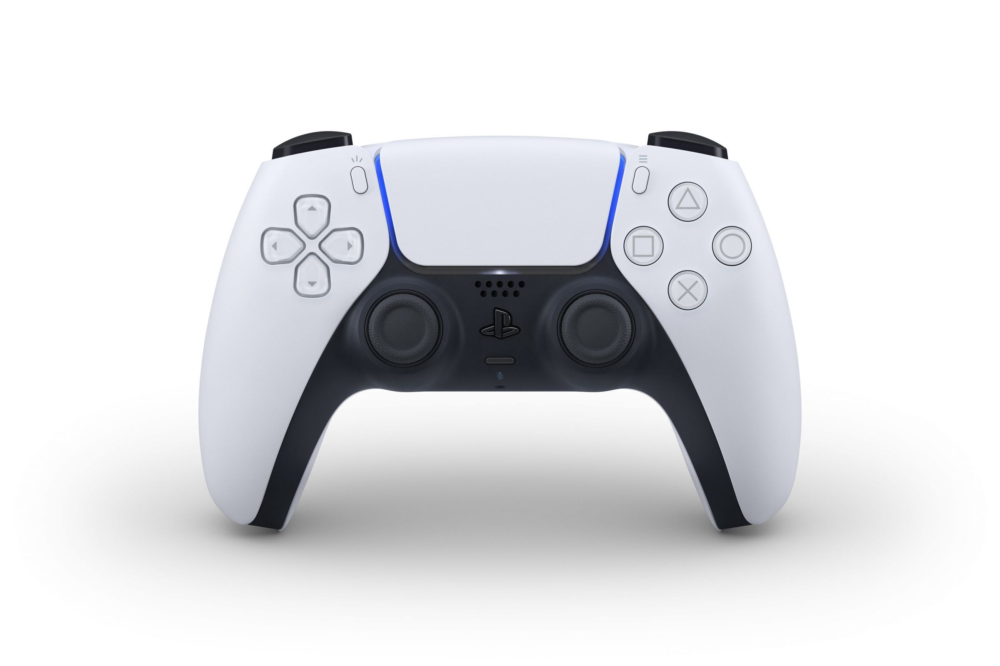
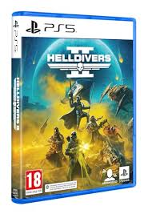
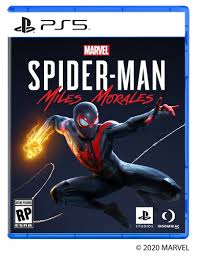

Старые игровые консоли занимают особое место в сердцах многих людей, став символом целой эпохи в мире видеоигр. Они не только принесли радость и развлечение, но и сформировали целую культуру, которая продолжает влиять на современные технологии и игры.
Первая волна домашних игровых консолей началась в 1970-х годах с таких устройств, как Magnavox Odyssey. Хотя графика и звук были примитивными по сегодняшним меркам, эти консоли открыли двери в мир интерактивного развлечения. Игроки собирались вокруг экранов, чтобы сразиться в простых, но увлекательных играх, таких как пинг-понг и теннис.
playstation 1
PlayStation 1, или просто PS1, была революционной игровой консолью, которая изменила мир видеоигр в 1990-х годах. Она была выпущена компанией
Sony в 1994 году и стала прямым конкурентом Nintendo 64 и Sega Saturn.
Sega Mega Drive
Sega Mega Drive (яп. メガドライブ Мэга Дорайбу), в Северной Америке известна как Sega Genesis — игровая приставка четвёртого поколения, разработанная и выпускавшаяся компанией Sega. Приставка была выпущена в 1988 году в Японии как Mega Drive, в 1989 году в США как Genesis и в 1990 году в Европе (Virgin Mastertronic), Австралии (Ozisoft) и Бразилии (Tectoy) — вновь под названием Mega Drive. Причиной изменения названия при запуске приставки на рынке США явилась невозможность официальной регистрации торговой марки Mega Drive. Sega Mega Drive — это третья аппаратная платформа от Sega после Sega Master System. В Южной Корее распространением приставки занималась компания Samsung; приставка имела название Super Gam*Boy, позднее изменённое на Super Aladdin Boy.


Девятое поколение игровых приставок началось в ноябре 2020 года, с выпуском консолей Xbox Series X/S, а также PlayStation 5.
По сравнению с предыдущим поколением консолей — Xbox One (также они назывались One S и One X) и PlayStation 4, у консолей нового поколения значительно увеличилась производительность. Используя более быстрые графические процессоры, они получили поддержку трассировки лучей в реальном времени. Скорость рендеринга разрешения 4K (в некоторых случаях 8K) — 60 кадров в секунду и выше. Оба семейства консолей используют APU — гибридные процессоры от компании AMD на архитектуре Zen 2, «Oberon» в PlayStation 5 и «Arden» в Xbox Series X/S соответственно, а также твердотельные накопители (SSD). Эти накопители избавили консоли от шума, производимого движущимися частями традиционных HDD. Кроме того, они используются в качестве высокопроизводительной памяти, системы для хранения игр, для сокращения времени загрузки и поддержки потоковой передачи данных в играх.
Play Station 5
PlayStation 5 была разработана компанией Sony как преемница PlayStation 4 и выпущена в продажу 12 ноября 2020 года. Основная цель разработки PlayStation 5 — сокращение времени загрузки в играх, особенно в использующих потоковую передачу данных (во время перемещения игрока по открытому миру). Sony разработала собственную архитектуру SSD на основе 12-канального твердотельного накопителя ёмкостью 825 гигабайт, а также метод быстрой программной декомпрессии, обеспечивающий скорость ввода/вывода до 8-9 ГБ/с. В большинстве ранних тестов во время разработки это практически исключало загрузочные экраны и производило маскировку времени загрузки для игр с открытым миром. Система работает на базе чипа AMD Zen 2, работающего с переменной частотой до 3,5 ГГц и графического процессора RDNA 2[англ.], работающего с переменной частотой до 2,23 ГГц. Общая потенциальная вычислительная мощность графического процессора составляет 10,28 терафлопс. В системе установлено 16 гигабайт оперативной памяти


